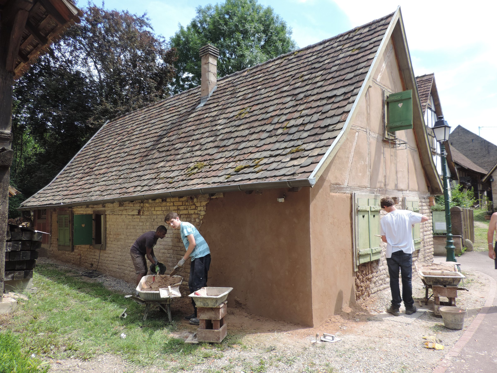

Wer kann teilnehmen?
Alle ab 16 Jahren. Vorkenntnisse sind nicht nötig, alle Nationalitäten sind willkommen.

Gemeinsam erhalten
Internationale Denkmalschutz-Workcamps in Reichstett ab 16 Jahren.
Alle ab 16 Jahren. Vorkenntnisse sind nicht nötig, alle Nationalitäten sind willkommen.
16.–28. Juli oder 31. Juli–12. August. Arbeitszeiten: 9–12 Uhr und 14–17 Uhr.
Fachwerk, Kalkmauerwerk, Lehm, Dach, Anstrich, Archäologie, Gärten und Restaurierung ländlicher Gegenstände.
Unterkunft und Sanitäranlagen stellt die Gemeinde. Schlafsack, Matratze, feste Kleidung und Badesachen mitbringen.
Laden Sie das Formular herunter und kontaktieren Sie den Verein vor jeder Zahlung.